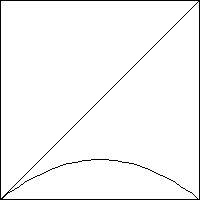
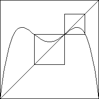

Deterministic Chaos
6.P. Renormalization
One way to visually understand the
period-doubling sequence
is through a method called renormalization.
The sequence of pictures below shows graphs of L(x) and
of L2(x).
To the graphs of L2(x) are attached small squares
with corners at the nonzero fixed point of L(x) and with base length determined
by where a horizontal line from the fixed point next crosses the graph of
L2(x).
These are the trapping squares.
|
|  |
 |
| Graphical iteration takes any point to the
fixed point at x = 0, the fixed point on a corner of the square.
Click the picture to see the iterates. |
Graphical iteration takes any point to the fixed point
at x = 0, the fixed point on a corner of the square.
Click the picture to see the iterates. |
|
The complete cascade of behaviors of L(x) inside the
unit square is repeated by the portions of L2(x) in each of the two
trapping squares.
Similar results hold for all Ln(x). This explains the smaller
copies of the bifurcation diagram in the whole diagram.
Return to Deterministic Chaos.